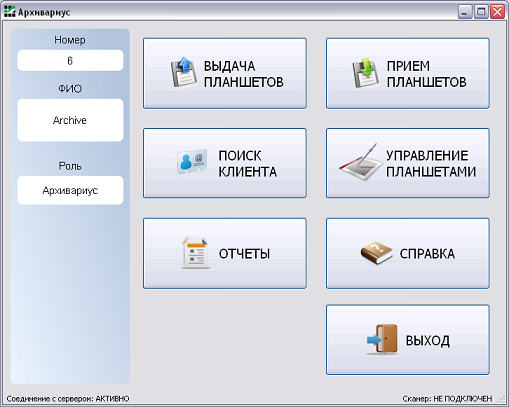
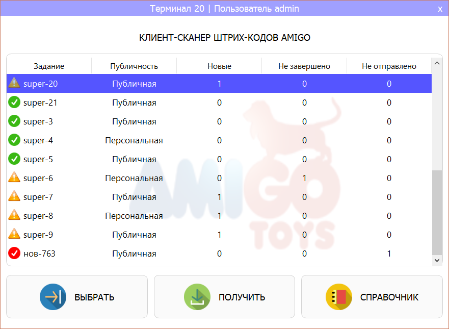

My GitHub activity
GitHub pet projects
Commercial projects
2013-2014
GENPLAN logistics system
C++ Qt PostgreSQL The system stores and processes information regarding topographic sheets (planers), employees and customers of GenPlan company. Customers may borrow and return topographic sheets, attach DWG files containing their changes. The system automatically tracks the history of planer versions and allows viewing, downloading and updating any version, and automatic parsing of DWG files in order to generate the so called digital version of the topographic sheet. The history of digital planer versions is tracked as well. Thus, the system is like a "Git for topographers".
2012-2013
AmiGo Toys logistics system
C++ MFC WinSock MS SQL WinCE Win32 API The system stores and processes information about employees of AmigoToys company (packers and cashiers) and their tasks in progress, as well as new tasks (personal or public) available on server. Each task contains the list of planned and actually scanned products. The system allows downloading, hierarchical viewing, ordering, re-packing products, viewing logs, starting and completing tasks. Thick yet lightweight clients were written for Windows CE, Windows XP and later versions. GUI looks very "90's", however users have found it quite user-friendly and expressive.